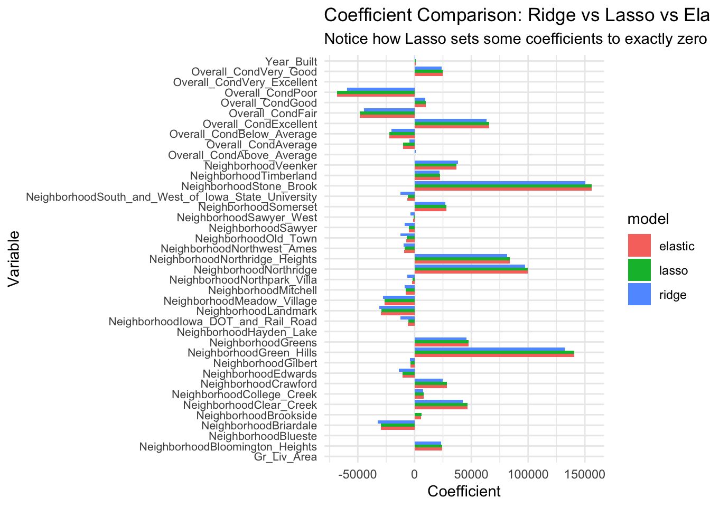
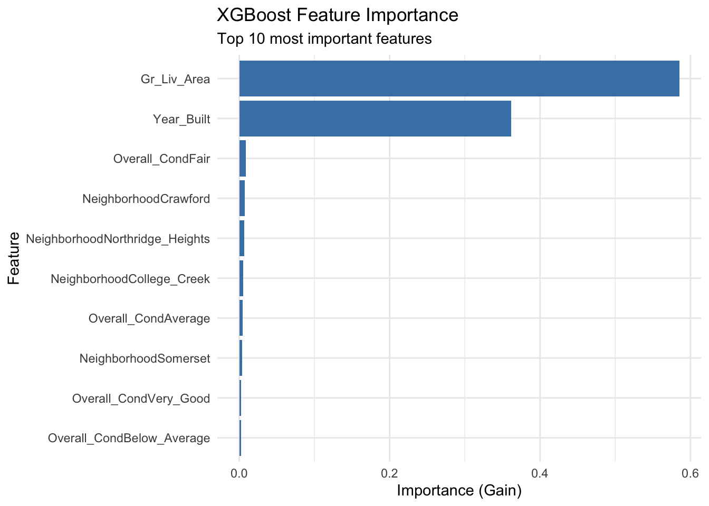
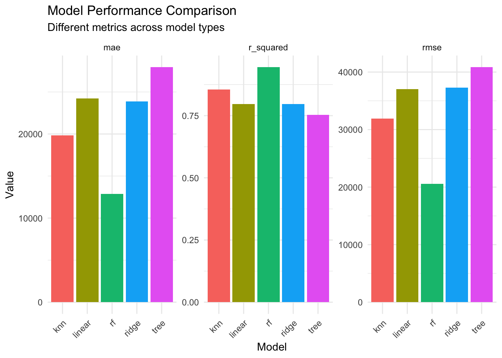

Chapter 11: Model Specification with parsnip - A Unified Interface for Models
Author
David Sarrat González, Juan R González
Published
October 1, 2025
Learning Objectives
By the end of this chapter, you will master:
The parsnip philosophy and design principles
Specifying models across different engines
Setting modes and engines appropriately
Model arguments and hyperparameters
Translating between different modeling packages
Creating custom model specifications
Understanding computational engines
Best practices for model specification
The Problem parsnip Solves
One of the most frustrating aspects of machine learning in R is the inconsistency across modeling packages. Each package has its own syntax, arguments, and output format. Let’s see this problem in action:
v broom 1.0.10 v recipes 1.3.1
v dials 1.4.2 v rsample 1.3.1
v dplyr 1.1.4 v tailor 0.1.0
v ggplot2 4.0.0 v tidyr 1.3.1
v infer 1.0.9 v tune 2.0.0
v modeldata 1.5.1 v workflows 1.3.0
v parsnip 1.3.3 v workflowsets 1.1.1
v purrr 1.1.0 v yardstick 1.3.2
-- Conflicts ----------------------------------------- tidymodels_conflicts() --
x purrr::discard() masks scales::discard()
x dplyr::filter() masks stats::filter()
x dplyr::lag() masks stats::lag()
x recipes::step() masks stats::step()
library(tidyverse)
-- Attaching core tidyverse packages ------------------------ tidyverse 2.0.0 --
v forcats 1.0.0 v stringr 1.5.2
v lubridate 1.9.4 v tibble 3.3.0
v readr 2.1.5
-- Conflicts ------------------------------------------ tidyverse_conflicts() --
x readr::col_factor() masks scales::col_factor()
x purrr::discard() masks scales::discard()
x dplyr::filter() masks stats::filter()
x stringr::fixed() masks recipes::fixed()
x dplyr::lag() masks stats::lag()
x readr::spec() masks yardstick::spec()
i Use the conflicted package (<http://conflicted.r-lib.org/>) to force all conflicts to become errors
library(modeldata)library(ranger) # For random forestslibrary(glmnet) # For regularized regression
Cargando paquete requerido: Matrix
Adjuntando el paquete: 'Matrix'
The following objects are masked from 'package:tidyr':
expand, pack, unpack
Loaded glmnet 4.1-10
library(kknn) # For k-nearest neighborslibrary(kernlab) # For support vector machines
Adjuntando el paquete: 'kernlab'
The following object is masked from 'package:purrr':
cross
The following object is masked from 'package:ggplot2':
alpha
The following object is masked from 'package:dials':
buffer
The following object is masked from 'package:scales':
alpha
library(xgboost) # For gradient boosting
Adjuntando el paquete: 'xgboost'
The following object is masked from 'package:dplyr':
slice
# Set theme and seedtheme_set(theme_minimal())set.seed(123)# Load datadata(ames)ames_small <- ames %>%select(Sale_Price, Gr_Liv_Area, Year_Built, Overall_Cond, Neighborhood) %>%slice_sample(n =500) # Smaller sample for demonstration# The chaos of different interfaces# Linear regression with lm()lm_fit <-lm(Sale_Price ~ ., data = ames_small)# Random forest with ranger()rf_fit <-ranger(Sale_Price ~ ., data = ames_small, num.trees =100)# Elastic net with glmnet() - requires matrix input!x_matrix <-model.matrix(Sale_Price ~ . -1, data = ames_small)y_vector <- ames_small$Sale_Priceglmnet_fit <-glmnet(x_matrix, y_vector, alpha =0.5)# Different prediction methodslm_pred <-predict(lm_fit, ames_small) # Returns vectorrf_pred <-predict(rf_fit, ames_small)$predictions # Returns list with $predictionsglmnet_pred <-predict(glmnet_fit, x_matrix, s =0.01) # Requires matrix and lambda# The outputs are all different!str(lm_pred)
Named num [1:500] 222479 219821 228298 259642 129456 ...
- attr(*, "names")= chr [1:500] "1" "2" "3" "4" ...
str(rf_pred)
num [1:500] 234231 188176 197626 263308 124126 ...
Notice the problems: - Different function names and arguments - Different data format requirements (data frame vs matrix) - Different prediction interfaces - Different output structures
This inconsistency makes it hard to: - Switch between models - Compare different approaches - Build reproducible workflows - Write general-purpose code
Enter parsnip: One Interface to Rule Them All
Parsnip provides a unified interface for model specification. The philosophy is simple but powerful: 1. Separate model specification from model fitting 2. Use consistent naming across all models 3. Provide a common interface for predictions 4. Allow engine flexibility while maintaining consistency
The parsnip Workflow
# Step 1: Specify the model typelinear_spec <-linear_reg()print(linear_spec)
Linear Regression Model Specification (regression)
Computational engine: lm
# Step 2: Set the engine (implementation)linear_spec <- linear_spec %>%set_engine("lm")print(linear_spec)
Linear Regression Model Specification (regression)
Computational engine: lm
# Step 3: Set the mode (if needed - regression vs classification)# For linear_reg, mode is always regression, so this is automatic# Step 4: Fit the modellinear_fit <- linear_spec %>%fit(Sale_Price ~ ., data = ames_small)# Consistent prediction interfacelinear_pred <-predict(linear_fit, ames_small)str(linear_pred) # Always returns a tibble with .pred column
tibble [500 x 1] (S3: tbl_df/tbl/data.frame)
$ .pred: num [1:500] 222479 219821 228298 259642 129456 ...
The beauty of this approach: - Model specification is separate from fitting - Consistent interface across all models - Predictable output format - Easy to swap different implementations
Model Types in parsnip
Parsnip supports a wide variety of model types. Let’s explore the main categories:
Regression Models
# Linear regressionlinear_reg_spec <-linear_reg() %>%set_engine("lm")# Decision treetree_reg_spec <-decision_tree() %>%set_engine("rpart") %>%set_mode("regression")# Random forestrf_reg_spec <-rand_forest() %>%set_engine("ranger") %>%set_mode("regression")# Support vector machinesvm_reg_spec <-svm_rbf() %>%set_engine("kernlab") %>%set_mode("regression")# Neural networknn_reg_spec <-mlp() %>%set_engine("nnet") %>%set_mode("regression")# Show info for linear regressionparsnip::show_model_info("linear_reg")
Information for `linear_reg`
modes: unknown, regression, quantile regression
engines:
quantile regression: quantreg1
regression: brulee, glm1, glmnet1, keras, lm1, spark1, stan1
1The model can use case weights.
arguments:
glmnet:
penalty --> lambda
mixture --> alpha
spark:
penalty --> reg_param
mixture --> elastic_net_param
keras:
penalty --> penalty
brulee:
penalty --> penalty
mixture --> mixture
fit modules:
engine mode
lm regression
glm regression
glmnet regression
stan regression
spark regression
keras regression
brulee regression
quantreg quantile regression
prediction modules:
mode engine methods
quantile regression quantreg quantile
regression brulee numeric
regression glm conf_int, numeric, raw
regression glmnet numeric, raw
regression keras numeric
regression lm conf_int, numeric, pred_int, raw
regression spark numeric
regression stan conf_int, numeric, pred_int, raw
Each model type can have multiple engines (implementations). The choice of engine affects: - Available hyperparameters - Computational efficiency - Additional features - Required packages
Exploring Available Engines
# See all engines for a model typeshow_engines("rand_forest")
# Different engines for linear regressionlinear_engines <-show_engines("linear_reg")print(linear_engines)
# A tibble: 8 x 2
engine mode
<chr> <chr>
1 lm regression
2 glm regression
3 glmnet regression
4 stan regression
5 spark regression
6 keras regression
7 brulee regression
8 quantreg quantile regression
# Let's compare different engines for the same modelengines_to_compare <-c("lm", "glm", "glmnet")linear_comparisons <-map(engines_to_compare, function(eng) {# Special handling for glmnetif (eng =="glmnet") { spec <-linear_reg(penalty =0) %>%set_engine(eng) # No regularization } else { spec <-linear_reg() %>%set_engine(eng) }# Fit the model fit <- spec %>%fit(Sale_Price ~ Gr_Liv_Area + Overall_Cond, data = ames_small)# Get predictions preds <-predict(fit, ames_small)# Return summarytibble(engine = eng,rmse =sqrt(mean((ames_small$Sale_Price - preds$.pred)^2)) )})bind_rows(linear_comparisons) %>% knitr::kable(digits =2)
engine
rmse
lm
53749.53
glm
53749.53
glmnet
53751.01
Engine-Specific Arguments
Different engines support different arguments:
# Random forest with ranger enginerf_ranger <-rand_forest(trees =500) %>%set_engine("ranger",importance ="impurity", # ranger-specificnum.threads =2) # ranger-specific# Random forest with randomForest enginerf_randomForest <-rand_forest(trees =500) %>%set_engine("randomForest",nodesize =5, # randomForest-specificmaxnodes =100) # randomForest-specific# The model specification is the same, but engine arguments differprint(rf_ranger)
Random Forest Model Specification (unknown mode)
Main Arguments:
trees = 500
Engine-Specific Arguments:
importance = impurity
num.threads = 2
Computational engine: ranger
print(rf_randomForest)
Random Forest Model Specification (unknown mode)
Main Arguments:
trees = 500
Engine-Specific Arguments:
nodesize = 5
maxnodes = 100
Computational engine: randomForest
Model Arguments and Hyperparameters
Parsnip distinguishes between: - Main arguments: Common across engines (e.g., trees for random forests) - Engine arguments: Specific to an implementation
Main Arguments
# Main arguments are specified in the model functionrf_with_args <-rand_forest(trees =1000, # Number of treesmtry =3, # Variables per splitmin_n =10# Minimum node size) %>%set_engine("ranger") %>%set_mode("regression")print(rf_with_args)
Random Forest Model Specification (regression)
Main Arguments:
mtry = 3
trees = 1000
min_n = 10
Computational engine: ranger
# These translate to engine-specific namestranslate(rf_with_args) # See the actual ranger call
Random Forest Model Specification (regression)
Main Arguments:
mtry = 3
trees = 1000
min_n = 10
Computational engine: ranger
Model fit template:
ranger::ranger(x = missing_arg(), y = missing_arg(), weights = missing_arg(),
mtry = min_cols(~3, x), num.trees = 1000, min.node.size = min_rows(~10,
x), num.threads = 1, verbose = FALSE, seed = sample.int(10^5,
1))
Updating Model Specifications
Model specifications can be updated dynamically:
# Start with a basic specificationbase_rf <-rand_forest() %>%set_engine("ranger") %>%set_mode("regression")# Update with new valuesupdated_rf <- base_rf %>%set_args(trees =2000, mtry =5)print(updated_rf)
Random Forest Model Specification (regression)
Main Arguments:
mtry = 5
trees = 2000
Computational engine: ranger
# This is useful for tuningtunable_rf <-rand_forest(trees =tune(), # Mark for tuningmtry =tune(),min_n =tune()) %>%set_engine("ranger") %>%set_mode("regression")print(tunable_rf)
Random Forest Model Specification (regression)
Main Arguments:
mtry = tune()
trees = tune()
min_n = tune()
Computational engine: ranger
Consistent Prediction Interface
One of parsnip’s greatest strengths is consistent predictions:
# Fit different modelsmodels <-list(linear =linear_reg() %>%set_engine("lm") %>%fit(Sale_Price ~ Gr_Liv_Area + Overall_Cond, data = ames_small),tree =decision_tree() %>%set_engine("rpart") %>%set_mode("regression") %>%fit(Sale_Price ~ Gr_Liv_Area + Overall_Cond, data = ames_small),knn =nearest_neighbor(neighbors =5) %>%set_engine("kknn") %>%set_mode("regression") %>%fit(Sale_Price ~ Gr_Liv_Area + Overall_Cond, data = ames_small))# All predictions have the same formatpredictions <-map(models, ~predict(., ames_small))# Check structure - all identical!map(predictions, str)
tibble [500 x 1] (S3: tbl_df/tbl/data.frame)
$ .pred: num [1:500] 190481 194350 211597 241778 121628 ...
tibble [500 x 1] (S3: tbl_df/tbl/data.frame)
$ .pred: num [1:500] 212497 212497 212497 212497 118782 ...
tibble [500 x 1] (S3: tbl_df/tbl/data.frame)
$ .pred: num [1:500] 232004 183235 186429 243400 129300 ...
$linear
NULL
$tree
NULL
$knn
NULL
# For classification, we can get probabilities consistentlyclass_model <-logistic_reg() %>%set_engine("glm") %>%fit(expensive ~ Gr_Liv_Area + Overall_Cond, data = ames_class)# Class predictionsclass_preds <-predict(class_model, ames_class)head(class_preds)
# A tibble: 6 x 1
.pred_class
<fct>
1 no
2 yes
3 yes
4 yes
5 no
6 yes
# Probability predictionsprob_preds <-predict(class_model, ames_class, type ="prob")head(prob_preds)
Regularized models require special handling for the penalty parameter:
# Ridge regressionridge_spec <-linear_reg(penalty =0.1, mixture =0) %>%set_engine("glmnet")# Lasso regression lasso_spec <-linear_reg(penalty =0.1, mixture =1) %>%set_engine("glmnet")# Elastic netelastic_spec <-linear_reg(penalty =0.1, mixture =0.5) %>%set_engine("glmnet")# Fit and compareregularized_models <-list(ridge = ridge_spec,lasso = lasso_spec,elastic = elastic_spec) %>%map(~fit(., Sale_Price ~ ., data = ames_small))# Extract coefficientscoef_comparison <-map_df(names(regularized_models), function(model_name) { coefs <- regularized_models[[model_name]] %>%tidy() %>%filter(term !="(Intercept)") %>%mutate(model = model_name)})# Visualize coefficient shrinkageggplot(coef_comparison, aes(x = term, y = estimate, fill = model)) +geom_col(position ="dodge") +coord_flip() +labs(title ="Coefficient Comparison: Ridge vs Lasso vs Elastic Net",subtitle ="Notice how Lasso sets some coefficients to exactly zero",x ="Variable", y ="Coefficient" ) +theme(axis.text.y =element_text(size =8))

Boosted Trees
Gradient boosting has many hyperparameters:
# XGBoost specificationxgb_spec <-boost_tree(trees =1000, # Number of treestree_depth =6, # Maximum tree depthmin_n =10, # Minimum node sizeloss_reduction =0.01, # Minimum loss reductionsample_size =0.8, # Subsample ratiolearn_rate =0.01# Learning rate) %>%set_engine("xgboost") %>%set_mode("regression")print(xgb_spec)
Boosted Tree Model Specification (regression)
Main Arguments:
trees = 1000
min_n = 10
tree_depth = 6
learn_rate = 0.01
loss_reduction = 0.01
sample_size = 0.8
Computational engine: xgboost
# Fit the modelxgb_fit <- xgb_spec %>%fit(Sale_Price ~ ., data = ames_small)# Feature importancexgb_importance <- xgb_fit %>%extract_fit_engine() %>% xgboost::xgb.importance(model = .) %>%as_tibble()ggplot(xgb_importance %>%head(10), aes(x =reorder(Feature, Gain), y = Gain)) +geom_col(fill ="steelblue") +coord_flip() +labs(title ="XGBoost Feature Importance",subtitle ="Top 10 most important features",x ="Feature", y ="Importance (Gain)" )

Model Comparison Framework
Parsnip makes it easy to compare different models systematically:
# Define multiple model specificationsmodel_specs <-list(linear =linear_reg() %>%set_engine("lm"),ridge =linear_reg(penalty =0.1, mixture =0) %>%set_engine("glmnet"),tree =decision_tree(tree_depth =10) %>%set_engine("rpart") %>%set_mode("regression"),rf =rand_forest(trees =100) %>%set_engine("ranger") %>%set_mode("regression"),knn =nearest_neighbor(neighbors =10) %>%set_engine("kknn") %>%set_mode("regression"))# Fit all modelsfitted_models <-map(model_specs, ~fit(., Sale_Price ~ ., data = ames_small))# Evaluate all modelsmodel_evaluation <-map_df(names(fitted_models), function(model_name) { model <- fitted_models[[model_name]]# Get predictions preds <-predict(model, ames_small)$.pred# Calculate metricstibble(model = model_name,rmse =sqrt(mean((ames_small$Sale_Price - preds)^2)),mae =mean(abs(ames_small$Sale_Price - preds)),r_squared =cor(ames_small$Sale_Price, preds)^2 )})# Visualize comparisonmodel_evaluation %>%pivot_longer(cols =c(rmse, mae, r_squared), names_to ="metric", values_to ="value") %>%ggplot(aes(x = model, y = value, fill = model)) +geom_col() +facet_wrap(~metric, scales ="free_y") +labs(title ="Model Performance Comparison",subtitle ="Different metrics across model types",x ="Model", y ="Value" ) +theme(legend.position ="none", axis.text.x =element_text(angle =45, hjust =1))

Creating Model Specifications Programmatically
Sometimes we need to create model specifications dynamically:
# Function to create model specs with different hyperparameterscreate_rf_spec <-function(n_trees, mtry_prop, min_node) {rand_forest(trees = n_trees,mtry =floor(mtry_prop *ncol(ames_small) -1), # Convert to integermin_n = min_node ) %>%set_engine("ranger") %>%set_mode("regression")}# Create a grid of specificationsrf_grid <-expand_grid(n_trees =c(100, 500, 1000),mtry_prop =c(0.3, 0.5, 0.7),min_node =c(5, 10, 20))# Create specificationsrf_specs <-pmap(rf_grid, create_rf_spec)# Fit a subset and comparesubset_specs <- rf_specs[c(1, 14, 27)] # Low, medium, high complexitysubset_fits <-map(subset_specs, ~fit(., Sale_Price ~ ., data = ames_small))# Evaluatesubset_evaluation <-map_df(1:3, function(i) { preds <-predict(subset_fits[[i]], ames_small)$.predtibble(config =c("Low", "Medium", "High")[i],trees = rf_grid$n_trees[c(1, 14, 27)][i],mtry_prop = rf_grid$mtry_prop[c(1, 14, 27)][i],min_node = rf_grid$min_node[c(1, 14, 27)][i],rmse =sqrt(mean((ames_small$Sale_Price - preds)^2)) )})knitr::kable(subset_evaluation, digits =2)
config
trees
mtry_prop
min_node
rmse
Low
100
0.3
5
20494.26
Medium
500
0.5
10
33261.85
High
1000
0.7
20
30141.50
Understanding Model Translations
Parsnip translates your specifications to the underlying engine calls:
# See how parsnip translates to different enginesrf_spec <-rand_forest(trees =500, mtry =5, min_n =10) %>%set_mode("regression")# Translation for rangerrf_spec %>%set_engine("ranger") %>%translate()
Random Forest Model Specification (regression)
Main Arguments:
mtry = 5
trees = 500
min_n = 10
Computational engine: ranger
Model fit template:
ranger::ranger(x = missing_arg(), y = missing_arg(), weights = missing_arg(),
mtry = min_cols(~5, x), num.trees = 500, min.node.size = min_rows(~10,
x), num.threads = 1, verbose = FALSE, seed = sample.int(10^5,
1))
# Translation for randomForestrf_spec %>%set_engine("randomForest") %>%translate()
Random Forest Model Specification (regression)
Main Arguments:
mtry = 5
trees = 500
min_n = 10
Computational engine: randomForest
Model fit template:
randomForest::randomForest(x = missing_arg(), y = missing_arg(),
mtry = min_cols(~5, x), ntree = 500, nodesize = min_rows(~10,
x))
# The arguments are mapped appropriately!# trees -> num.trees (ranger) or ntree (randomForest)# mtry -> mtry (both)# min_n -> min.node.size (ranger) or nodesize (randomForest)
# Create a naming convention for your specificationsmodels <-list(# Baseline modelsbaseline_mean =null_model() %>%set_engine("parsnip") %>%set_mode("regression"),baseline_linear =linear_reg() %>%set_engine("lm"),# Regularized modelsreg_ridge =linear_reg(penalty =0.1, mixture =0) %>%set_engine("glmnet"),reg_lasso =linear_reg(penalty =0.1, mixture =1) %>%set_engine("glmnet"),# Tree modelstree_single =decision_tree() %>%set_engine("rpart") %>%set_mode("regression"),tree_rf =rand_forest() %>%set_engine("ranger") %>%set_mode("regression"),tree_boost =boost_tree() %>%set_engine("xgboost") %>%set_mode("regression"))
3. Document Your Choices
# Document why you chose specific valuesproduction_rf <-rand_forest(trees =500, # Balanced accuracy vs training timemtry =5, # sqrt(p) rule for regressionmin_n =20# Prevent overfitting on small samples) %>%set_engine("ranger",importance ="impurity", # Need feature importanceseed =123, # Reproducibilitynum.threads =4) %>%# Server has 8 cores, use halfset_mode("regression")
# Not all combinations worktryCatch({ bad_spec <-linear_reg() %>%set_engine("rpart") # Decision tree engine for linear regression?}, error =function(e) {cat("Error:", e$message, "\n")})
Error: Engine "rpart" is not supported for `linear_reg()`
# RandomForest with proximityif (requireNamespace("randomForest", quietly =TRUE)) { rf_rf_prox <-rand_forest(trees =100) %>%set_engine("randomForest",proximity =TRUE, # Calculate proximity matrixkeep.forest =TRUE) %>%set_mode("regression") %>%fit(Sale_Price ~ ., data = ames_small)# The proximity matrix shows similarity between observations# This is useful for clustering and outlier detectioncat("\nrandomForest can provide proximity matrix for clustering\n")}
Summary
In this comprehensive chapter, you’ve mastered:
✅ Core parsnip concepts - Unified model interface philosophy - Separation of specification and fitting - Consistent prediction interface
✅ Model specifications - Different model types - Setting engines and modes - Main vs engine arguments
✅ Advanced techniques - Multi-engine comparisons - Programmatic model creation - Model translations
✅ Best practices - Starting simple and adding complexity - Consistent naming conventions - Proper documentation
Key takeaways: - Parsnip provides consistency across diverse models - Same interface whether using lm or xgboost - Easy to swap and compare different approaches - Engine flexibility with common interface - Predictable, tidy outputs
What’s Next?
In Chapter 12, we’ll learn about workflows that combine models with preprocessing and evaluation metrics.
---title: "Chapter 11: Model Specification with parsnip - A Unified Interface for Models"author: "David Sarrat González, Juan R González"date: todayformat: html: code-fold: false code-tools: true---## Learning ObjectivesBy the end of this chapter, you will master:- The parsnip philosophy and design principles- Specifying models across different engines- Setting modes and engines appropriately- Model arguments and hyperparameters- Translating between different modeling packages- Creating custom model specifications- Understanding computational engines- Best practices for model specification## The Problem parsnip SolvesOne of the most frustrating aspects of machine learning in R is the inconsistency across modeling packages. Each package has its own syntax, arguments, and output format. Let's see this problem in action:```{r}#| message: truelibrary(tidymodels)library(tidyverse)library(modeldata)library(ranger) # For random forestslibrary(glmnet) # For regularized regressionlibrary(kknn) # For k-nearest neighborslibrary(kernlab) # For support vector machineslibrary(xgboost) # For gradient boosting# Set theme and seedtheme_set(theme_minimal())set.seed(123)# Load datadata(ames)ames_small <- ames %>%select(Sale_Price, Gr_Liv_Area, Year_Built, Overall_Cond, Neighborhood) %>%slice_sample(n =500) # Smaller sample for demonstration# The chaos of different interfaces# Linear regression with lm()lm_fit <-lm(Sale_Price ~ ., data = ames_small)# Random forest with ranger()rf_fit <-ranger(Sale_Price ~ ., data = ames_small, num.trees =100)# Elastic net with glmnet() - requires matrix input!x_matrix <-model.matrix(Sale_Price ~ . -1, data = ames_small)y_vector <- ames_small$Sale_Priceglmnet_fit <-glmnet(x_matrix, y_vector, alpha =0.5)# Different prediction methodslm_pred <-predict(lm_fit, ames_small) # Returns vectorrf_pred <-predict(rf_fit, ames_small)$predictions # Returns list with $predictionsglmnet_pred <-predict(glmnet_fit, x_matrix, s =0.01) # Requires matrix and lambda# The outputs are all different!str(lm_pred)str(rf_pred)str(glmnet_pred)```Notice the problems:- Different function names and arguments- Different data format requirements (data frame vs matrix)- Different prediction interfaces- Different output structuresThis inconsistency makes it hard to:- Switch between models- Compare different approaches- Build reproducible workflows- Write general-purpose code## Enter parsnip: One Interface to Rule Them AllParsnip provides a unified interface for model specification. The philosophy is simple but powerful:1. **Separate model specification from model fitting**2. **Use consistent naming across all models**3. **Provide a common interface for predictions**4. **Allow engine flexibility while maintaining consistency**### The parsnip Workflow```{r}# Step 1: Specify the model typelinear_spec <-linear_reg()print(linear_spec)# Step 2: Set the engine (implementation)linear_spec <- linear_spec %>%set_engine("lm")print(linear_spec)# Step 3: Set the mode (if needed - regression vs classification)# For linear_reg, mode is always regression, so this is automatic# Step 4: Fit the modellinear_fit <- linear_spec %>%fit(Sale_Price ~ ., data = ames_small)# Consistent prediction interfacelinear_pred <-predict(linear_fit, ames_small)str(linear_pred) # Always returns a tibble with .pred column```The beauty of this approach:- **Model specification** is separate from fitting- **Consistent interface** across all models- **Predictable output** format- **Easy to swap** different implementations## Model Types in parsnipParsnip supports a wide variety of model types. Let's explore the main categories:### Regression Models```{r}# Linear regressionlinear_reg_spec <-linear_reg() %>%set_engine("lm")# Decision treetree_reg_spec <-decision_tree() %>%set_engine("rpart") %>%set_mode("regression")# Random forestrf_reg_spec <-rand_forest() %>%set_engine("ranger") %>%set_mode("regression")# Support vector machinesvm_reg_spec <-svm_rbf() %>%set_engine("kernlab") %>%set_mode("regression")# Neural networknn_reg_spec <-mlp() %>%set_engine("nnet") %>%set_mode("regression")# Show info for linear regressionparsnip::show_model_info("linear_reg")```### Classification Models```{r}# Create classification dataames_class <- ames %>%mutate(expensive =factor(if_else(Sale_Price >median(Sale_Price), "yes", "no"))) %>%select(expensive, Gr_Liv_Area, Year_Built, Overall_Cond) %>%slice_sample(n =500)# Logistic regressionlogistic_spec <-logistic_reg() %>%set_engine("glm")# Random forest for classificationrf_class_spec <-rand_forest() %>%set_engine("ranger") %>%set_mode("classification")# Support vector machine for classificationsvm_class_spec <-svm_rbf() %>%set_engine("kernlab") %>%set_mode("classification")# K-nearest neighborsknn_spec <-nearest_neighbor() %>%set_engine("kknn") %>%set_mode("classification")# Naive Bayesnb_spec <-naive_Bayes() %>%set_engine("naivebayes") %>%set_mode("classification")```## Understanding EnginesEach model type can have multiple engines (implementations). The choice of engine affects:- Available hyperparameters- Computational efficiency- Additional features- Required packages### Exploring Available Engines```{r}# See all engines for a model typeshow_engines("rand_forest")# Different engines for linear regressionlinear_engines <-show_engines("linear_reg")print(linear_engines)# Let's compare different engines for the same modelengines_to_compare <-c("lm", "glm", "glmnet")linear_comparisons <-map(engines_to_compare, function(eng) {# Special handling for glmnetif (eng =="glmnet") { spec <-linear_reg(penalty =0) %>%set_engine(eng) # No regularization } else { spec <-linear_reg() %>%set_engine(eng) }# Fit the model fit <- spec %>%fit(Sale_Price ~ Gr_Liv_Area + Overall_Cond, data = ames_small)# Get predictions preds <-predict(fit, ames_small)# Return summarytibble(engine = eng,rmse =sqrt(mean((ames_small$Sale_Price - preds$.pred)^2)) )})bind_rows(linear_comparisons) %>% knitr::kable(digits =2)```### Engine-Specific ArgumentsDifferent engines support different arguments:```{r}# Random forest with ranger enginerf_ranger <-rand_forest(trees =500) %>%set_engine("ranger",importance ="impurity", # ranger-specificnum.threads =2) # ranger-specific# Random forest with randomForest enginerf_randomForest <-rand_forest(trees =500) %>%set_engine("randomForest",nodesize =5, # randomForest-specificmaxnodes =100) # randomForest-specific# The model specification is the same, but engine arguments differprint(rf_ranger)print(rf_randomForest)```## Model Arguments and HyperparametersParsnip distinguishes between:- **Main arguments**: Common across engines (e.g., `trees` for random forests)- **Engine arguments**: Specific to an implementation### Main Arguments```{r}# Main arguments are specified in the model functionrf_with_args <-rand_forest(trees =1000, # Number of treesmtry =3, # Variables per splitmin_n =10# Minimum node size) %>%set_engine("ranger") %>%set_mode("regression")print(rf_with_args)# These translate to engine-specific namestranslate(rf_with_args) # See the actual ranger call```### Updating Model SpecificationsModel specifications can be updated dynamically:```{r}# Start with a basic specificationbase_rf <-rand_forest() %>%set_engine("ranger") %>%set_mode("regression")# Update with new valuesupdated_rf <- base_rf %>%set_args(trees =2000, mtry =5)print(updated_rf)# This is useful for tuningtunable_rf <-rand_forest(trees =tune(), # Mark for tuningmtry =tune(),min_n =tune()) %>%set_engine("ranger") %>%set_mode("regression")print(tunable_rf)```## Consistent Prediction InterfaceOne of parsnip's greatest strengths is consistent predictions:```{r}# Fit different modelsmodels <-list(linear =linear_reg() %>%set_engine("lm") %>%fit(Sale_Price ~ Gr_Liv_Area + Overall_Cond, data = ames_small),tree =decision_tree() %>%set_engine("rpart") %>%set_mode("regression") %>%fit(Sale_Price ~ Gr_Liv_Area + Overall_Cond, data = ames_small),knn =nearest_neighbor(neighbors =5) %>%set_engine("kknn") %>%set_mode("regression") %>%fit(Sale_Price ~ Gr_Liv_Area + Overall_Cond, data = ames_small))# All predictions have the same formatpredictions <-map(models, ~predict(., ames_small))# Check structure - all identical!map(predictions, str)# For classification, we can get probabilities consistentlyclass_model <-logistic_reg() %>%set_engine("glm") %>%fit(expensive ~ Gr_Liv_Area + Overall_Cond, data = ames_class)# Class predictionsclass_preds <-predict(class_model, ames_class)head(class_preds)# Probability predictionsprob_preds <-predict(class_model, ames_class, type ="prob")head(prob_preds)```## Advanced Model Specifications### Regularized RegressionRegularized models require special handling for the penalty parameter:```{r}# Ridge regressionridge_spec <-linear_reg(penalty =0.1, mixture =0) %>%set_engine("glmnet")# Lasso regression lasso_spec <-linear_reg(penalty =0.1, mixture =1) %>%set_engine("glmnet")# Elastic netelastic_spec <-linear_reg(penalty =0.1, mixture =0.5) %>%set_engine("glmnet")# Fit and compareregularized_models <-list(ridge = ridge_spec,lasso = lasso_spec,elastic = elastic_spec) %>%map(~fit(., Sale_Price ~ ., data = ames_small))# Extract coefficientscoef_comparison <-map_df(names(regularized_models), function(model_name) { coefs <- regularized_models[[model_name]] %>%tidy() %>%filter(term !="(Intercept)") %>%mutate(model = model_name)})# Visualize coefficient shrinkageggplot(coef_comparison, aes(x = term, y = estimate, fill = model)) +geom_col(position ="dodge") +coord_flip() +labs(title ="Coefficient Comparison: Ridge vs Lasso vs Elastic Net",subtitle ="Notice how Lasso sets some coefficients to exactly zero",x ="Variable", y ="Coefficient" ) +theme(axis.text.y =element_text(size =8))```### Boosted TreesGradient boosting has many hyperparameters:```{r}# XGBoost specificationxgb_spec <-boost_tree(trees =1000, # Number of treestree_depth =6, # Maximum tree depthmin_n =10, # Minimum node sizeloss_reduction =0.01, # Minimum loss reductionsample_size =0.8, # Subsample ratiolearn_rate =0.01# Learning rate) %>%set_engine("xgboost") %>%set_mode("regression")print(xgb_spec)# Fit the modelxgb_fit <- xgb_spec %>%fit(Sale_Price ~ ., data = ames_small)# Feature importancexgb_importance <- xgb_fit %>%extract_fit_engine() %>% xgboost::xgb.importance(model = .) %>%as_tibble()ggplot(xgb_importance %>%head(10), aes(x =reorder(Feature, Gain), y = Gain)) +geom_col(fill ="steelblue") +coord_flip() +labs(title ="XGBoost Feature Importance",subtitle ="Top 10 most important features",x ="Feature", y ="Importance (Gain)" )```## Model Comparison FrameworkParsnip makes it easy to compare different models systematically:```{r}# Define multiple model specificationsmodel_specs <-list(linear =linear_reg() %>%set_engine("lm"),ridge =linear_reg(penalty =0.1, mixture =0) %>%set_engine("glmnet"),tree =decision_tree(tree_depth =10) %>%set_engine("rpart") %>%set_mode("regression"),rf =rand_forest(trees =100) %>%set_engine("ranger") %>%set_mode("regression"),knn =nearest_neighbor(neighbors =10) %>%set_engine("kknn") %>%set_mode("regression"))# Fit all modelsfitted_models <-map(model_specs, ~fit(., Sale_Price ~ ., data = ames_small))# Evaluate all modelsmodel_evaluation <-map_df(names(fitted_models), function(model_name) { model <- fitted_models[[model_name]]# Get predictions preds <-predict(model, ames_small)$.pred# Calculate metricstibble(model = model_name,rmse =sqrt(mean((ames_small$Sale_Price - preds)^2)),mae =mean(abs(ames_small$Sale_Price - preds)),r_squared =cor(ames_small$Sale_Price, preds)^2 )})# Visualize comparisonmodel_evaluation %>%pivot_longer(cols =c(rmse, mae, r_squared), names_to ="metric", values_to ="value") %>%ggplot(aes(x = model, y = value, fill = model)) +geom_col() +facet_wrap(~metric, scales ="free_y") +labs(title ="Model Performance Comparison",subtitle ="Different metrics across model types",x ="Model", y ="Value" ) +theme(legend.position ="none", axis.text.x =element_text(angle =45, hjust =1))```## Creating Model Specifications ProgrammaticallySometimes we need to create model specifications dynamically:```{r}# Function to create model specs with different hyperparameterscreate_rf_spec <-function(n_trees, mtry_prop, min_node) {rand_forest(trees = n_trees,mtry =floor(mtry_prop *ncol(ames_small) -1), # Convert to integermin_n = min_node ) %>%set_engine("ranger") %>%set_mode("regression")}# Create a grid of specificationsrf_grid <-expand_grid(n_trees =c(100, 500, 1000),mtry_prop =c(0.3, 0.5, 0.7),min_node =c(5, 10, 20))# Create specificationsrf_specs <-pmap(rf_grid, create_rf_spec)# Fit a subset and comparesubset_specs <- rf_specs[c(1, 14, 27)] # Low, medium, high complexitysubset_fits <-map(subset_specs, ~fit(., Sale_Price ~ ., data = ames_small))# Evaluatesubset_evaluation <-map_df(1:3, function(i) { preds <-predict(subset_fits[[i]], ames_small)$.predtibble(config =c("Low", "Medium", "High")[i],trees = rf_grid$n_trees[c(1, 14, 27)][i],mtry_prop = rf_grid$mtry_prop[c(1, 14, 27)][i],min_node = rf_grid$min_node[c(1, 14, 27)][i],rmse =sqrt(mean((ames_small$Sale_Price - preds)^2)) )})knitr::kable(subset_evaluation, digits =2)```## Understanding Model TranslationsParsnip translates your specifications to the underlying engine calls:```{r}# See how parsnip translates to different enginesrf_spec <-rand_forest(trees =500, mtry =5, min_n =10) %>%set_mode("regression")# Translation for rangerrf_spec %>%set_engine("ranger") %>%translate()# Translation for randomForestrf_spec %>%set_engine("randomForest") %>%translate()# The arguments are mapped appropriately!# trees -> num.trees (ranger) or ntree (randomForest)# mtry -> mtry (both)# min_n -> min.node.size (ranger) or nodesize (randomForest)```## Model Specification Best Practices### 1. Start Simple, Add Complexity```{r}# Start with default valuessimple_rf <-rand_forest() %>%set_engine("ranger") %>%set_mode("regression")# Add complexity as neededcomplex_rf <-rand_forest(trees =1000,mtry =tune(),min_n =tune()) %>%set_engine("ranger",importance ="impurity",num.threads = parallel::detectCores() -1) %>%set_mode("regression")```### 2. Use Consistent Naming```{r}# Create a naming convention for your specificationsmodels <-list(# Baseline modelsbaseline_mean =null_model() %>%set_engine("parsnip") %>%set_mode("regression"),baseline_linear =linear_reg() %>%set_engine("lm"),# Regularized modelsreg_ridge =linear_reg(penalty =0.1, mixture =0) %>%set_engine("glmnet"),reg_lasso =linear_reg(penalty =0.1, mixture =1) %>%set_engine("glmnet"),# Tree modelstree_single =decision_tree() %>%set_engine("rpart") %>%set_mode("regression"),tree_rf =rand_forest() %>%set_engine("ranger") %>%set_mode("regression"),tree_boost =boost_tree() %>%set_engine("xgboost") %>%set_mode("regression"))```### 3. Document Your Choices```{r}# Document why you chose specific valuesproduction_rf <-rand_forest(trees =500, # Balanced accuracy vs training timemtry =5, # sqrt(p) rule for regressionmin_n =20# Prevent overfitting on small samples) %>%set_engine("ranger",importance ="impurity", # Need feature importanceseed =123, # Reproducibilitynum.threads =4) %>%# Server has 8 cores, use halfset_mode("regression")```## Troubleshooting Common Issues### Issue 1: Missing Required Packages```{r}# Check if required package is installedcheck_model_package <-function(model_spec) { required_pkg <- model_spec$engineif (!requireNamespace(required_pkg, quietly =TRUE)) {cat("Package", required_pkg, "is not installed.\n")cat("Install with: install.packages('", required_pkg, "')\n", sep ="")return(FALSE) }cat("Package", required_pkg, "is available.\n")return(TRUE)}# Testsvm_spec <-svm_rbf() %>%set_engine("kernlab")check_model_package(svm_spec)```### Issue 2: Incompatible Mode/Engine Combinations```{r}# Not all combinations worktryCatch({ bad_spec <-linear_reg() %>%set_engine("rpart") # Decision tree engine for linear regression?}, error =function(e) {cat("Error:", e$message, "\n")})# Check valid combinationsshow_engines("linear_reg")```### Issue 3: Missing Arguments```{r}# Some engines require specific argumentstryCatch({ bad_glmnet <-linear_reg() %>%set_engine("glmnet") # Missing penalty!fit(bad_glmnet, Sale_Price ~ ., data = ames_small)}, error =function(e) {cat("Error: glmnet requires penalty argument\n")})# Correct specificationgood_glmnet <-linear_reg(penalty =0.1) %>%set_engine("glmnet")```## Exercises### Exercise 1: Multi-Engine ComparisonCompare the same model type across different engines:```{r}# Your solution# Compare random forest implementationsengines <-c("ranger", "randomForest")rf_comparison <-map_df(engines, function(eng) {# Skip if package not availableif (!requireNamespace(eng, quietly =TRUE)) {return(tibble(engine = eng, status ="Package not installed")) }# Create specification spec <-rand_forest(trees =100) %>%set_engine(eng) %>%set_mode("regression")# Time the fitting start_time <-Sys.time() fit <- spec %>%fit(Sale_Price ~ ., data = ames_small) fit_time <-as.numeric(Sys.time() - start_time, units ="secs")# Get predictions preds <-predict(fit, ames_small)$.pred# Return metricstibble(engine = eng,fit_time = fit_time,rmse =sqrt(mean((ames_small$Sale_Price - preds)^2)),status ="Success" )})knitr::kable(rf_comparison, digits =2)```### Exercise 2: Custom Model GridCreate a grid of model specifications for comparison:```{r}# Your solution# Create diverse model specificationsmodel_grid <-tribble(~name, ~type, ~engine, ~hyperparams,"linear_basic", "linear_reg", "lm", list(),"linear_ridge", "linear_reg", "glmnet", list(penalty =0.01, mixture =0),"tree_shallow", "decision_tree", "rpart", list(tree_depth =5),"tree_deep", "decision_tree", "rpart", list(tree_depth =15),"rf_small", "rand_forest", "ranger", list(trees =50),"rf_large", "rand_forest", "ranger", list(trees =500),"knn_few", "nearest_neighbor", "kknn", list(neighbors =3),"knn_many", "nearest_neighbor", "kknn", list(neighbors =20))# Function to create spec from grid rowcreate_spec <-function(type, engine, hyperparams) {# Get base specification spec <-switch(type,linear_reg =linear_reg(),decision_tree =decision_tree(),rand_forest =rand_forest(),nearest_neighbor =nearest_neighbor() )# Add hyperparametersif (length(hyperparams) >0) { spec <-do.call(set_args, c(list(spec), hyperparams)) }# Set engine and mode spec %>%set_engine(engine) %>%set_mode("regression")}# Create all specificationsall_specs <-pmap(model_grid %>%select(-name), create_spec)names(all_specs) <- model_grid$name# Fit and evaluate a fewsample_models <- all_specs[c("linear_basic", "tree_deep", "rf_large")]sample_fits <-map(sample_models, ~fit(., Sale_Price ~ ., data = ames_small))# Quick evaluationmap_dbl(sample_fits, function(fit) { preds <-predict(fit, ames_small)$.predsqrt(mean((ames_small$Sale_Price - preds)^2))})```### Exercise 3: Engine-Specific FeaturesExplore engine-specific features for the same model:```{r}# Your solution# Random forest with different engine features# Ranger with importancerf_ranger_imp <-rand_forest(trees =100) %>%set_engine("ranger", importance ="permutation",keep.inbag =TRUE) %>%# For prediction intervalsset_mode("regression") %>%fit(Sale_Price ~ ., data = ames_small)# Extract ranger-specific featuresranger_importance <- rf_ranger_imp %>%extract_fit_engine() %>% .$variable.importance %>%sort(decreasing =TRUE) %>%head(10)print("Ranger Variable Importance:")print(ranger_importance)# RandomForest with proximityif (requireNamespace("randomForest", quietly =TRUE)) { rf_rf_prox <-rand_forest(trees =100) %>%set_engine("randomForest",proximity =TRUE, # Calculate proximity matrixkeep.forest =TRUE) %>%set_mode("regression") %>%fit(Sale_Price ~ ., data = ames_small)# The proximity matrix shows similarity between observations# This is useful for clustering and outlier detectioncat("\nrandomForest can provide proximity matrix for clustering\n")}```## SummaryIn this comprehensive chapter, you've mastered:✅ **Core parsnip concepts** - Unified model interface philosophy - Separation of specification and fitting - Consistent prediction interface✅ **Model specifications** - Different model types - Setting engines and modes - Main vs engine arguments✅ **Advanced techniques** - Multi-engine comparisons - Programmatic model creation - Model translations✅ **Best practices** - Starting simple and adding complexity - Consistent naming conventions - Proper documentationKey takeaways:- Parsnip provides consistency across diverse models- Same interface whether using lm or xgboost- Easy to swap and compare different approaches- Engine flexibility with common interface- Predictable, tidy outputs## What's Next?In [Chapter 12](12-workflows-evaluation.Rmd), we'll learn about workflows that combine models with preprocessing and evaluation metrics.## Additional Resources- [parsnip Documentation](https://parsnip.tidymodels.org/)- [List of Available Models](https://www.tidymodels.org/find/parsnip/)- [Adding New Models to parsnip](https://www.tidymodels.org/learn/develop/models/)- [Tidy Modeling with R - Models Chapter](https://www.tmwr.org/models.html)